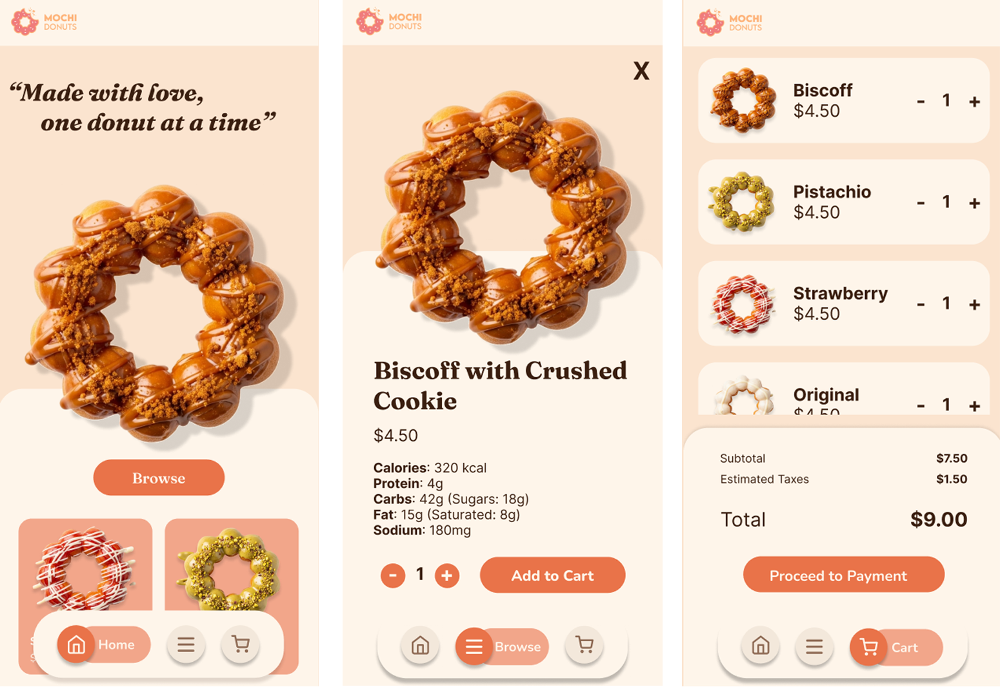
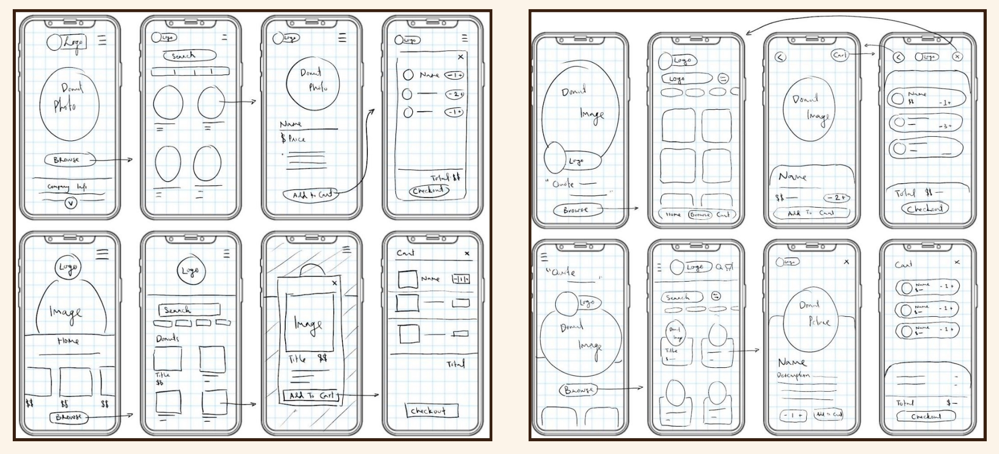
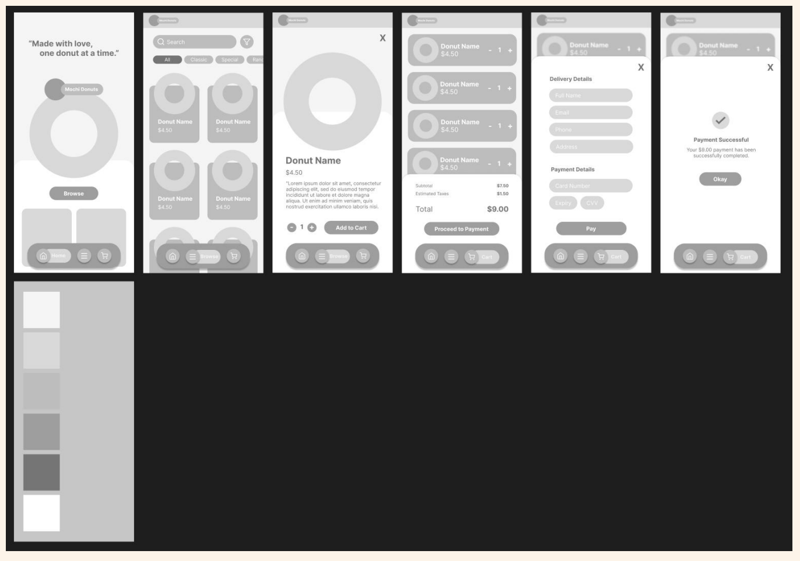

Aadi
Prashar
Website
Number 1
This was one of my first coloured pieces where I decided to pay thorough attention to colour study, and actually experiment with it. Before this, I typically preferred only sketches, or grayscale rather than fully coloured pieces.
Back to the Orrery
The goal of this project was to redesign and rebuild the Mochi Donuts website (mochidonuts.com.au) from scratch using only Vanilla HTML, CSS, and JavaScript, without any use of other frameworks. The final website needed to be fully responsive across desktop and mobile, functional (cart, product browsing, checkout flow), and consist of a nice visual aesthetic as well as a consistent brand identity.
What I think went really well was the overall visual design. I believe the visuals came together better than I expected, where the colour palette, typography, donut imagery all feel cohesive and nice. I’m very proud of the overlapping images of the donuts which add figure-ground, and make the website look different but also very engaging. I was also happy with the responsive changes between the desktop and mobile versions; the floating pill bottom nav, the slide-up payment sections, and the overall layout changes. Making the mobile version feel polished and app-like, rather than just a scaled down version of the desktop.

